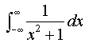

| Let's consider the value of the integral of 1/zn. Please pay attention to location of the closed contour C.
If a=1 and the origin is included in the area closed by contour C, the
value of integral is presented by standing line, which means Refer to Meaning of Multiplication of Complex Variables and Integral of z |
| Find the value of |  |
By real number.